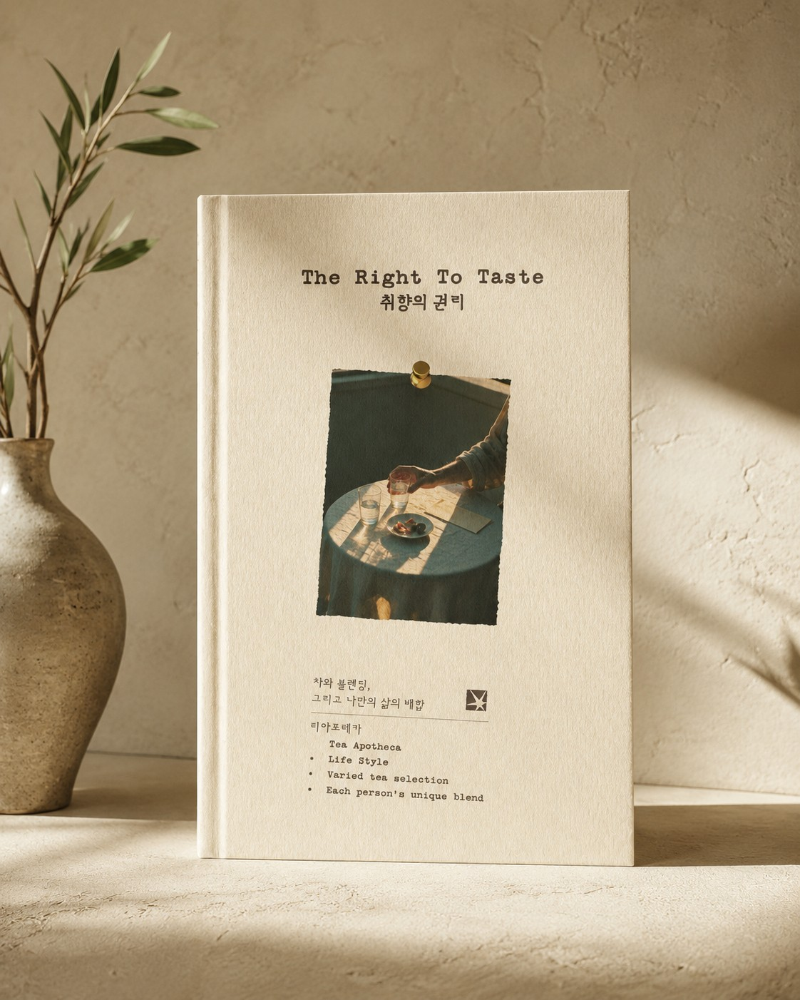
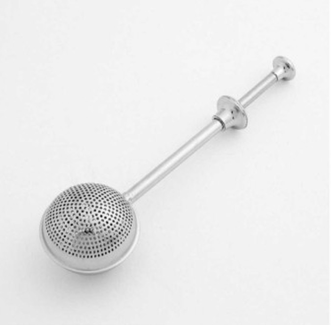
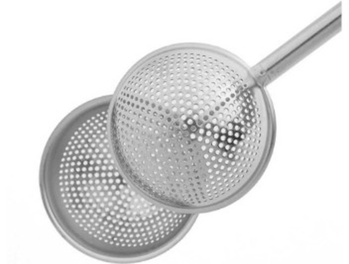

VER.1 — Taste
허브 블렌딩

레몬밤 · 히비스커스 · 페퍼민트
유자 · 장미 · 캐모마일
향과 색, 감각으로 즐기는
화사한 허브 블렌딩
새로운 향을 탐색하는 시간을 좋아하는 분에게
오늘의 한 잔은 내가 정합니다.
대한명인이 설계한 레시피 21가지

같은 재료로 우린 두 잔 · 같은 잔, 같은 빛
티백을 뜯을 때마다
매번 같은 맛이라 지겨웠던 적,
블렌딩 카페는 좋았지만
매번 시간 내서 찾아가긴 어려웠던 적,
선물로 차를 고르다가
결국 무난한 걸로 타협했던 적.
그런데 문득 궁금해졌습니다.

재료를 고르고, 섞고, 우리는 데 필요한 것을
하나의 키트에 담았습니다.

메일러 상자뚜껑이 뒤로 열리는 상자. 겉은 아이보리 미장, 안은 흰색.
아코디언북병풍처럼 펼치면 원료 파우치와 엽서 창이 번갈아 나옵니다.
띠지Taste · Depth 구분
블렌딩 노트비율과 그날의 감상을 적는 소프트커버 노트.
칸막이책과 노트를 두 칸에 나눠 담습니다.



대한명인이 설계한 레시피 21가지
두 버전을 합친 재료 가짓수
저녁에도 편하게
150ml 기준, 키트 하나로
Taste와 Depth, 두 가지 시작점
레몬밤 · 히비스커스 · 페퍼민트
유자 · 장미 · 캐모마일
향과 색, 감각으로 즐기는
화사한 허브 블렌딩
새로운 향을 탐색하는 시간을 좋아하는 분에게

둥굴레 · 찰수수 · 단팥
현미 · 민들레 뿌리 · 보리
구수함과 로스팅의 깊이,
커피처럼 즐기는 곡물 블렌딩
커피를 마시던 시간에 새로운 한 잔을 찾는 분에게
티 블렌딩 키트 2개 · 키트마다 Taste / Depth 선택
말보다 경험으로 마음을 전하고 싶은 분에게
Taste와 Depth를 하나씩 고르면 허브와 곡물을 섞는 교차 블렌드까지 만들 수 있어요.
| VER.1 Taste | VER.2 Depth | 2개 세트 |
|---|---|---|
| 꽃과 허브 향을 좋아하는 사람 | 커피의 진하고 깊은 분위기를 좋아하는 사람 | 커피의 깊이와 과일 향을 함께 좋아하는 사람 |
| 산뜻한 과일차와 아이스티를 좋아하는 사람 | 일반적인 곡물차보다 입체적인 맛을 원하는 사람 | 향미 커피를 좋아하는 사람 |
| 향으로 기분을 전환하고 싶은 사람 | 볶은 향·우디함·카카오 같은 풍미를 좋아하는 사람 | 예상하지 못한 조합을 즐기는 사람 |
| 티 블렌딩을 처음 경험하는 사람 | 자신에게 맞는 쓴맛과 구수함을 직접 조절하고 싶은 사람 | 나만의 레시피를 적극적으로 만들고 싶은 사람 · 특별한 선물 |
향 · 바디 · 여운은 5점 기준의 시음 노트입니다.
| No. | Ingredient | Note | Aroma · Body · Finish | |
|---|---|---|---|---|
| VER.1 — Taste | ||||
| 01 |  | Lemon Balm Melissa officinalis 레몬밤 | 레몬과 풋잎을 떠올리게 하는 산뜻함. 첫 향을 밝게 엽니다. | |
| 02 |  | Hibiscus Hibiscus sabdariffa 히비스커스 | 붉은 과일을 연상시키는 선명한 산미. 수색을 바꿉니다. | |
| 03 |  | Peppermint Mentha × piperita 페퍼민트 | 차갑고 깨끗한 상쾌함. 소량부터. | |
| 04 |  | Yuza Citrus junos 유자 | 밝은 감귤 껍질 향과 은은한 쌉싸름함. | |
| 05 |  | Rose Rosa damascena 장미 | 우아하고 풍성한 꽃향. 긴 아로마. | |
| 06 |  | Chamomile Matricaria chamomilla 캐모마일 | 사과와 꿀을 연상시키는 부드러운 향. | |
| VER.2 — Depth | ||||
| 07 |  | Solomon's Seal Polygonatum odoratum 둥굴레 | 부드러운 볶은 뿌리와 은은한 단맛. 바디감을 둥글게. | |
| 08 |  | Glutinous Sorghum Sorghum bicolor 찰수수 | 담백하고 순한 곡물의 구수함. 뿌리 원료를 받쳐 줍니다. | |
| 09 |  | Red Bean Vigna angularis 단팥 | 볶은 팥의 고소하고 부드러운 여운. | |
| 10 |  | Brown Rice Oryza sativa 현미 | 볶은 쌀의 담백하고 고소한 향. 바디를 받쳐 줍니다. | |
| 11 |  | Dandelion Root Taraxacum officinale 민들레 뿌리 | 흙·나무·커피·카카오를 연상시키는 깊은 볶음 향. 중심 원료. | |
| 12 |  | Barley Hordeum vulgare 보리 | 익숙하고 선명한 볶은 곡물 향. | |
“그런데 저는
블렌딩을 해본 적이 없어요.”
전문가 레시피 그대로
하나를 더하거나 덜어서
노트에 남긴 비율이 레시피가 됩니다
| No. | Step | How |
|---|---|---|
| 01 | 고르기Choose | 아코디언북을 펼쳐 오늘의 기분에 맞는 원료를 고릅니다. |
| 02 | 담기Measure | 레시피 비율대로 원료를 덜어 빈 티백에 담습니다. |
| 03 | 붓기Pour | 레시피의 온도로 물을 천천히 붓습니다. |
| 04 | 우리기Steep | 레시피의 시간만큼 우립니다. 색이 바뀌는 순간을 지켜보세요. |
| 05 | 기록하기Note | 좋았던 비율과 다음에 바꿔 볼 것을 노트에 남깁니다. |
향을 맡고, 고르고, 섞고, 우리고, 기록합니다.
같은 재료도 비율이 달라지면
전혀 다른 한 잔이 됩니다.
취향은 그렇게 발견됩니다.
시음으로 고른 전문가 레시피 21가지가 함께 들어 있어요.
허브 10가지, 곡물 3가지, 허브와 곡물을 섞은 8가지.
| Recipe | Ratio | Brew | Tasting note |
|---|---|---|---|
| VER.1 · Tea Blender's Recipe 로즈가든 |
|
95~100°C 150ml 3~5분 |
부드러운 캐모마일 위로 장미의 꽃향이 길게 머무는, 첫 번째로 권하는 블렌드. |
| VER.1 + VER.2 · 교차 블렌드 유자 로스트 |
|
100°C 150ml 7~10분 |
유자의 밝은 첫 향 뒤에 깊은 볶음 향과 부드러운 고소함이 이어지는 시트러스 로스트. |
| VER.2 · Roaster's Recipe 브라질리언 로스트 |
|
100°C 150ml 10분 이상 |
깊게 볶은 듯한 첫 향에 단팥과 찰수수의 부드러운 구수함이 이어집니다. |
그리고 그다음 레시피는 당신의 것입니다.
그래서 만들었습니다.
「나의 취향찾기」에 답하면 전문가 레시피 21가지 중
지금 나에게 맞는 한 잔과, 그 레시피에 필요한 키트를 알려 드려요.
카페에 들어섰어요.
손이 먼저 가는 메뉴는?

30초 만에 나의 취향 찾기 · 취향의권리.com
결과로 나온 레시피는 키트 안 재료로
바로 만들어 볼 수 있어요.
좋았던 향,
마음에 들었던 조합,
다시 만들고 싶은 비율을 노트에 남깁니다.

「취향의 권리」는 차 블렌딩의 원칙과 경험을 바탕으로 설계했습니다.
원료의 성격을 읽고 비율로 균형을 잡아 왔습니다.
레시피 21가지는 모두 시음을 거쳐 골랐습니다.


20년 가까이 차·식음료 상품개발과 수출을 해 온 블렌더
저서 『11시와 4시, 나는 차를 마신다』, 『Life in My Teacup』
2010년 엘카페 창업, 16년째 로스팅을 이끌어 온 로스터
블루리본서베이 15년 연속 선정 로스터리 대표
Sprudge·Time Out Seoul이 주목한 서울 스페셜티 로스터
“전문가에게는 원칙을,
소비자에게는 취향의 권리를.”
아래 후기는 제품을 제공받은 체험단이 작성합니다.

오픈 전 체험단 20명의 첫 잔 이야기를 이 자리에 싣습니다.

오픈 전 체험단 20명의 첫 잔 이야기를 이 자리에 싣습니다.
오픈 전 체험단 20명의 첫 잔 이야기를 이 자리에 싣습니다.
혼자 즐기는 시간에도,
함께 차를 만들어보는 시간에도,
좋아하는 사람에게 건네는 선물에도.


와디즈에서 처음 만나는 「취향의 권리」



와디즈에서 먼저 만나는 이유 — 울트라 얼리버드 15% 혜택 · 「취향의 권리」 첫 공개
티 블렌딩 키트 1개 · VER.1 Taste 또는 VER.2 Depth
| Reward | 구성 | 가격 | 혜택 |
|---|---|---|---|
| REWARD 1 울트라 얼리버드 선착순 100명 |
티 블렌딩 키트 1개 VER.1 Taste 또는 VER.2 Depth |
50,100원 |
|
| REWARD 2 슈퍼 얼리버드 100개 |
티 블렌딩 키트 1개 VER.1 Taste 또는 VER.2 Depth |
54,800원 |
|
| REWARD 3 2개 세트 50세트 |
티 블렌딩 키트 2개 키트마다 Taste / Depth 선택 실물 블렌딩 노트 2권 |
110,000원 |
|
키트 구성: 원료 6종(원료별 소포장) · 빈 티백 · 실물 블렌딩 노트 · 전문가 레시피 21가지 안내
VER.1 Taste: 캐모마일 · 장미 · 레몬밤 · 히비스커스 · 유자 · 페퍼민트
VER.2 Depth: 둥굴레 · 찰수수 · 단팥 · 현미 · 민들레뿌리 · 보리
Taste와 Depth를 하나씩 고르면 허브와 곡물을 섞는 교차 블렌드까지 만들 수 있어요.
모든 리워드 무료배송
제주·도서산간은 '[추가 배송비] 제주·도서산간 지역(3,000원)'을 함께 선택해 주세요.
발송 일정은 펀딩 일정 확정 후 안내드립니다.
취향의 권리 | 나만의 블렌딩 레시피 이벤트
레시피를 공유해 주신 분 중 추첨으로 10명에게
취향의 권리 키트를 만드는 티 브랜드,
티아포테카의 차 4종(10만 원 상당)을 선물합니다.

키트로 나만의 블렌딩 레시피를 완성해요.
블렌딩 노트 사진과 레시피로 후기를 써 주세요.
@right.totaste 팔로우 후 같은 사진을 올리고 태그해 주세요.
#취향의권리 #나만의블렌딩 #이벤트참여
댓글에 와디즈 서포터 닉네임을 남겨 주세요.
네. 처음에는 전문가 추천 레시피를 따라 만들어보세요. 익숙해지면 재료 하나를 더하거나 덜어보고, 비율을 조금씩 바꾸면서 나만의 블렌딩을 만들 수 있습니다.
없습니다. 카페인이 없는 허브와 곡물로만 구성해 저녁이나 늦은 밤에도 편하게 즐길 수 있어요.
발송 일정은 펀딩 일정 확정 후 안내드립니다. 모든 리워드는 무료배송이며, 제주·도서산간 지역은 추가 배송비(3,000원) 옵션을 함께 선택해 주세요.
취향의권리.com에서 마음에 든 원료만 골라 낱개로 구매할 수 있어요.
펀딩 기간 중에는 언제든 취소할 수 있습니다. 식품 특성상 개봉 후 단순 변심 반품은 어렵고, 파손이나 불량은 수령 후 7일 이내 사진과 함께 문의 주시면 교환해 드립니다.
빛과 습기를 피해 보관하고, 향이 가장 좋은 한 달 안에 즐겨 주세요.
| 식품의 유형 | 펀딩 오픈 시 표기 |
|---|---|
| 내용량 | 펀딩 오픈 시 표기 |
| 원재료명 | 펀딩 오픈 시 표기 |
| 제조원 · 판매원 | 펀딩 오픈 시 표기 |
| 보관방법 | 펀딩 오픈 시 표기 |
| 소비기한 | 펀딩 오픈 시 표기 |
좋아하는 것이 더 좋은 일상이 되는 삶.
취향의권리.com